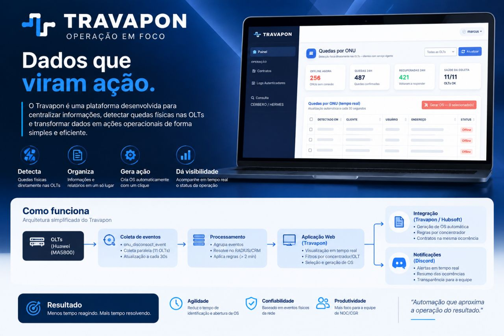

TravaponTravapon
Ferramenta interna — Automação de NOC/CGR
Evolução de uma ferramenta interna de operação: correlaciona eventos de rede, detecta quedas físicas de ONUs e automatiza a geração de Ordens de Serviço, integrando Hubsoft e Discord ao fluxo Rede → Travapon → Hubsoft → OS. No BackOffice, o botão "Corrigir ID" substituiu um processo manual via Postman para liberar cadastros duplicados.
- Python
- Automação de rede
- APIs REST
- Hubsoft